Comparing Bayesian Models
Asma Becheikh
Surgical: Institutional ranking
Introduction
I’m interesting in this Kernel in the comparison between two models and checking which of them fits better our data.
I’m considering a data set of mortality rates in 12 hospitals performing cardiac surgery in babies.
> "dt" <-
+ list(n = c(47, 148, 119, 810, 211, 196, 148, 215, 207, 97, 256, 360),
+ r = c(0, 18, 8, 46, 8, 13, 9, 31, 14, 8, 29, 24),
+ N = 12)
> head(dt)## $n
## [1] 47 148 119 810 211 196 148 215 207 97 256 360
##
## $r
## [1] 0 18 8 46 8 13 9 31 14 8 29 24
##
## $N
## [1] 12# The Models
Since we have no prior information on the parameters we will use in the follwoing two bayesian models non-informative priors.
Here’s below the BUGS code of the them:
- Model1
model
{
for( i in 1 : N ) {
p[i] ~ dbeta(1.0, 1.0)
r[i] ~ dbin(p[i], n[i])
}
}- Model2
model
{
for( i in 1 : N ) {
b[i] ~ dnorm(mu,tau)
r[i] ~ dbin(p[i],n[i])
logit(p[i]) <- b[i]
}
pop.mean <- exp(mu) / (1 + exp(mu))
mu ~ dnorm(0.0,1.0E-6)
sigma <- 1 / sqrt(tau)
tau ~ dgamma(0.001,0.001)
}R implementation
As mentioned above we will use for this analysis R2OpenBUGS, we need then to write these two models into two different .txt files. We need to write three R functions to initialize the Markov Chains. Here’s then the R code that can be implemented. We will later run the bugs command and study the convergence of each generated Markov Chain.
Let’s first load the needed packages
> library(R2OpenBUGS)
> library(coda)- The initializing functions
> inits1 <- function(){
+ inits = list(p = c(0.1, 0.1, 0.1, 0.1, 0.1, 0.1, 0.1, 0.1, 0.1, 0.1, 0.1, 0.1))
+ }
>
> inits2 <- function(){
+ inits = list(b = c( 0.1, 0.1, 0.1, 0.1, 0.1, 0.1, 0.1, 0.1, 0.1, 0.1, 0.1, 0.1),
+ tau = 1, mu = 0)
+ }- The parameters
> params1<-"p"
> params2<-c("b","tau","mu")- Creating the files of the BUGS code
### Model1
sink('Mod1_cp.txt')
cat("
model
{
for( i in 1 : N ) {
p[i] ~ dbeta(1.0, 1.0)
r[i] ~ dbin(p[i], n[i])
}
}
",fill=T)
sink()
### Model2
sink('Mod2_cp.txt')
cat("
model
{
for( i in 1 : N ) {
b[i] ~ dnorm(mu,tau)
r[i] ~ dbin(p[i],n[i])
logit(p[i]) <- b[i]
}
pop.mean <- exp(mu) / (1 + exp(mu))
mu ~ dnorm(0.0,1.0E-6)
sigma <- 1 / sqrt(tau)
tau ~ dgamma(0.001,0.001)
}
",fill=T)
sink()
filename1<-"Mod1_cp.txt"
filename2<-"Mod2_cp.txt"
+ Running now the Markov Chains . We will run two MC with 1000 iterations with a burn-in equal to 900. out1<-bugs(dt,inits1,params1,filename1,codaPkg=F,
n.thin =1, n.iter=10000,debug=F,
n.chains = 3,working.directory=getwd(),
OpenBUGS.pgm=OpenBUGS.pgm2, useWINE=T)
out2<-bugs(dt,inits2,params2,filename2,codaPkg=F,
n.thin =1, n.iter=10000,debug=F,
n.chains = 3,working.directory=getwd(),
OpenBUGS.pgm=OpenBUGS.pgm, useWINE=T)
# Model CheckingModel 1 (fixed effects)
We will then check the convergence of the Markov Chain contained in the R object out0.
We start then by the trace plot of the parameters
> dim(out1$sims.array)## [1] 5000 3 13> p=mcmc(out1$sims.array[,,1])
> lambda=exp(p)
> matplot(lambda,col=c("red","green","blue"),ylab=expression(lambda),type="l")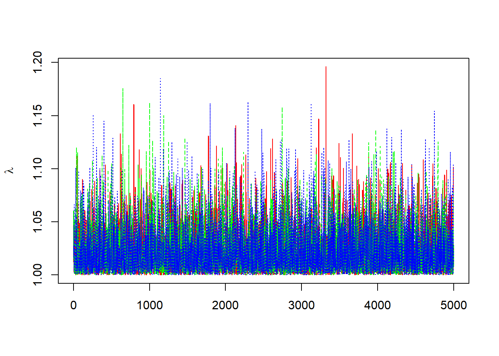 We proceed also by estimating the \(widehat{R}\) and its confidence interval:
{r, prompt=T,collapse=F}
gelman.diag(list(p[,1],p[,2],p[,3]))
gelman.plot(list(p[,1],p[,2],p[,3]))
Let us proceed to the auto-correlation diagnostics
> autocorr(p)## , , 1
##
## [,1] [,2] [,3]
## Lag 0 1.000000000 0.009933780 -0.0052161142
## Lag 1 0.019974788 0.022227859 0.0114345392
## Lag 5 -0.015009283 0.005993912 -0.0065865642
## Lag 10 -0.001914462 0.026841050 -0.0020523205
## Lag 50 -0.004718451 0.013676621 -0.0006136924
##
## , , 2
##
## [,1] [,2] [,3]
## Lag 0 0.009933780 1.000000e+00 0.012288669
## Lag 1 -0.007657110 -3.814890e-02 -0.011397636
## Lag 5 -0.009527792 6.067940e-06 0.010524050
## Lag 10 0.001209703 -1.926568e-02 -0.015344294
## Lag 50 0.006071663 -2.409962e-02 -0.005941581
##
## , , 3
##
## [,1] [,2] [,3]
## Lag 0 -0.005216114 0.012288669 1.000000000
## Lag 1 -0.014586409 0.012309264 -0.015391648
## Lag 5 0.005683784 0.008265747 0.003452552
## Lag 10 0.027403659 0.010138993 0.004182874
## Lag 50 -0.017032480 -0.046513276 -0.008098008> autocorr.diag(p,0:10)## [,1] [,2] [,3]
## Lag 0 1.000000000 1.000000e+00 1.000000000
## Lag 1 0.019974788 -3.814890e-02 -0.015391648
## Lag 2 -0.027151802 -5.590623e-03 0.001528107
## Lag 3 0.021517387 8.033627e-04 -0.010929057
## Lag 4 0.006218917 -2.206690e-04 -0.013557431
## Lag 5 -0.015009283 6.067940e-06 0.003452552
## Lag 6 0.006175764 -2.275218e-02 0.009363064
## Lag 7 -0.004721896 1.766815e-02 -0.025277222
## Lag 8 0.020168278 5.075395e-03 -0.003912033
## Lag 9 0.002466768 4.817521e-03 -0.033821607
## Lag 10 -0.001914462 -1.926568e-02 0.004182874> autocorr.plot(p)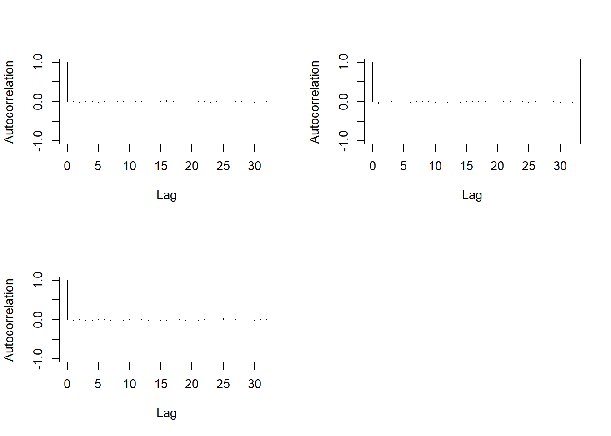 We finally proceed to the Geweke diagnostics that show the stationary of the generated sample.
> geweke.diag(p)##
## Fraction in 1st window = 0.1
## Fraction in 2nd window = 0.5
##
## var1 var2 var3
## -1.1256 0.2399 -0.8016We can then conclude that the Markov Chain in out1 converges to the posterior distribution.
Model 2 (random effects)
We will then check the convergence of the Markov Chain contained in the R object out2.
We start then by the trace plot of the parameters
> dim(out2$sims.array)
## [1] 5000 3 15
> b=mcmc(out2$sims.array[,,1])
> lambda1=exp(b)
> matplot(lambda1,col=c("red","green","blue"),type="l")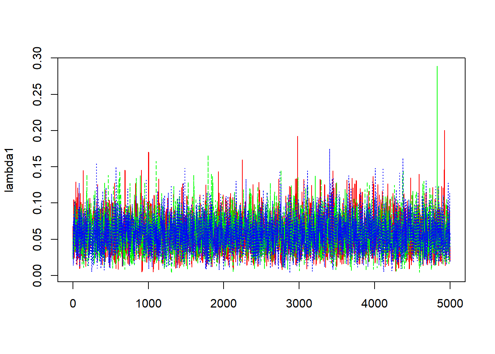
>
> tau=mcmc(out2$sims.array[,,2])
> lambda2=exp(tau)
> matplot(lambda2,col=c("red","green","blue"),type="l")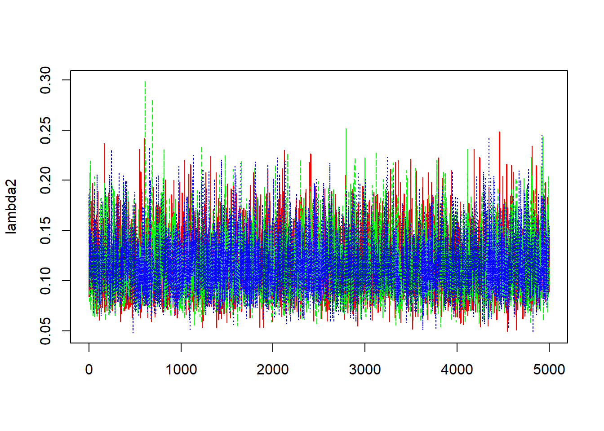
>
>
> mu=mcmc(out2$sims.array[,,3])
> matplot(mu,col=c("red","green","blue"),type="l")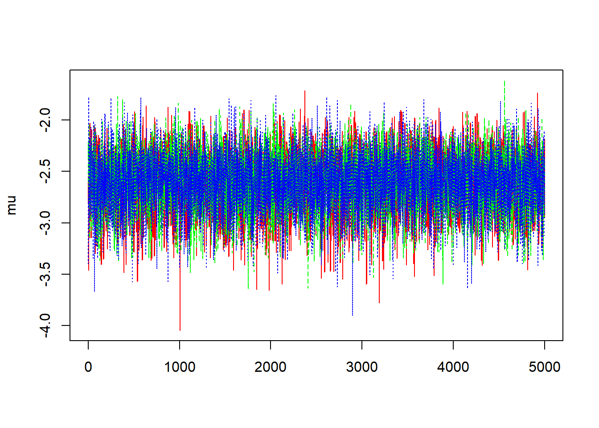
We can’t then conclude from these trace plots any abnormality in the convergence of the Markov Chain and let us then proceed to the others diagnostic methods.
- Estimation of \(\widehat{R}\)
> gelman.diag(list(b[,1],b[,2],b[,3]))
## Potential scale reduction factors:
##
## Point est. Upper C.I.
## [1,] 1 1
> gelman.plot(list(b[,1],b[,2],b[,3])) 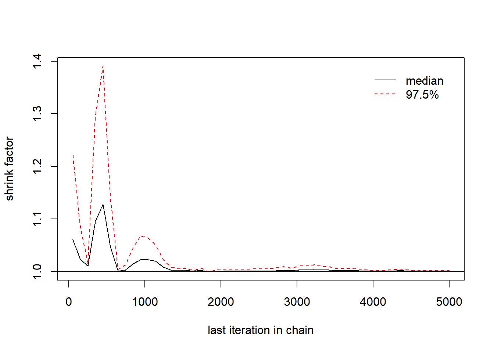
>
> gelman.diag(list(tau[,1],tau[,2],tau[,3]))
## Potential scale reduction factors:
##
## Point est. Upper C.I.
## [1,] 1 1
> gelman.plot(list(tau[,1],tau[,2],tau[,3])) 
>
> gelman.diag(list(mu[,1],mu[,2],mu[,3]))
## Potential scale reduction factors:
##
## Point est. Upper C.I.
## [1,] 1 1
> gelman.plot(list(mu[,1],mu[,2],mu[,3])) 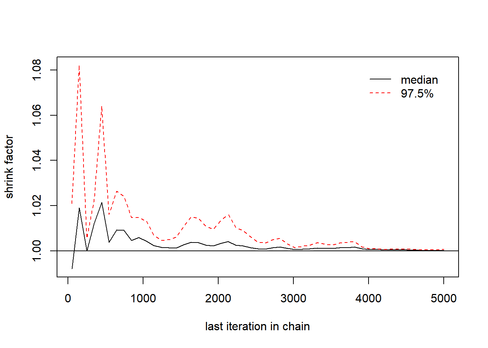
We may need to run the MC with a number of iterations larger than 10,000. We will try later 30,000 updates for the Markov Chain.
- Auto-correlation procedure
> autocorr.diag(b,0:10)
## [,1] [,2] [,3]
## Lag 0 1.00000000 1.000000000 1.00000000
## Lag 1 0.32006860 0.342401328 0.34155605
## Lag 2 0.19659757 0.199509141 0.21675726
## Lag 3 0.15142018 0.120611821 0.14069306
## Lag 4 0.09857832 0.054693649 0.08077390
## Lag 5 0.08684813 0.043534228 0.07445059
## Lag 6 0.07462635 0.020927443 0.04515027
## Lag 7 0.05665919 -0.009213829 0.03770174
## Lag 8 0.02336367 0.005059712 0.02043030
## Lag 9 0.02473561 0.021786884 0.01585114
## Lag 10 0.01737539 -0.016195543 -0.01133003
> autocorr.plot(b)
>
> autocorr.diag(tau,0:10)
## [,1] [,2] [,3]
## Lag 0 1.00000000 1.00000000 1.000000000
## Lag 1 0.16903668 0.15883824 0.127499422
## Lag 2 0.13624762 0.07377021 0.078122579
## Lag 3 0.08281997 0.07108845 0.069858762
## Lag 4 0.05654728 0.02770129 0.029767398
## Lag 5 0.05402871 0.01840954 0.025943958
## Lag 6 0.06812585 0.03348085 0.034336020
## Lag 7 0.02131336 0.02205854 0.005143152
## Lag 8 0.04328205 0.02214411 0.001163859
## Lag 9 0.02061515 0.01794638 -0.003553110
## Lag 10 0.03016306 0.01196034 0.017423105
> autocorr.plot(tau)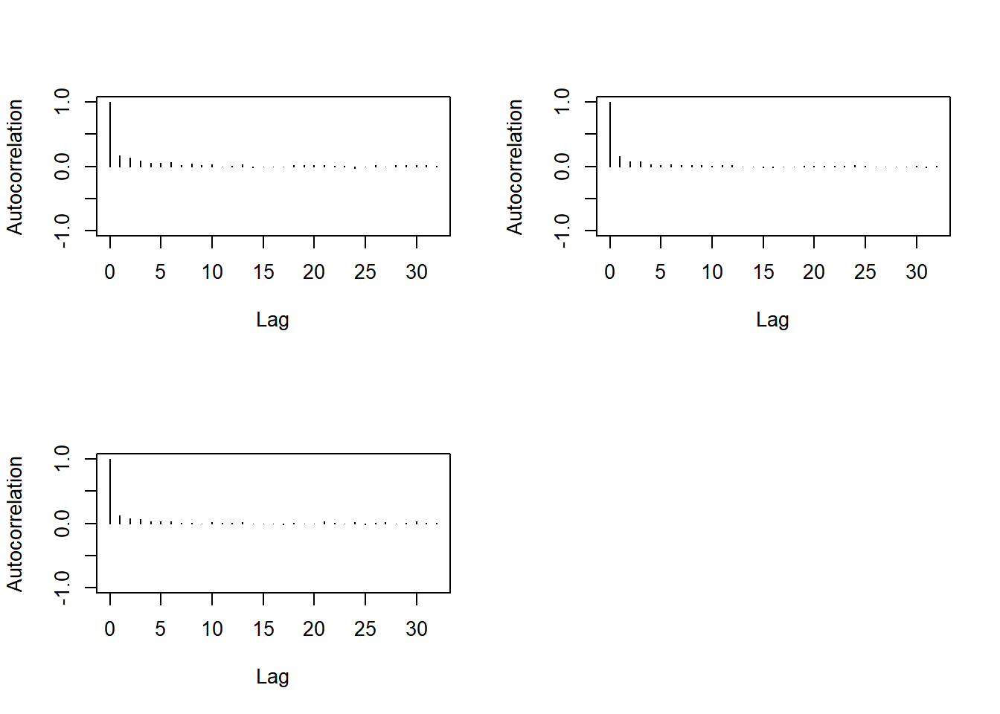
>
> autocorr.diag(mu,0:10)
## [,1] [,2] [,3]
## Lag 0 1.0000000000 1.000000000 1.000000000
## Lag 1 0.0611895920 0.074559770 0.054541912
## Lag 2 0.0530641713 0.040407749 0.018393081
## Lag 3 0.0302437409 0.000273707 0.020983112
## Lag 4 0.0167498877 0.034235379 -0.011232385
## Lag 5 0.0213525556 0.007706754 -0.003329340
## Lag 6 0.0259135266 0.000647724 -0.016633024
## Lag 7 0.0141224937 0.008967425 0.011433899
## Lag 8 0.0204484557 0.006276154 -0.008391834
## Lag 9 0.0277777180 0.019722742 0.015728758
## Lag 10 -0.0005654496 0.009829845 0.001522239
> autocorr.plot(mu)We need then to increase the thin parameter when running the next MC.
- a new update of the MC:
out2a<-bugs(dt,inits2,params2,filename2,n.burnin = 25000,
n.thin =5, n.iter=30000
n.chains = 3
)Let us then proceed with another convergence diagnostics:
>
> b=mcmc(out2a$sims.array[,,1])
> tau=mcmc(out2a$sims.array[,,2])
> mu=mcmc(out2a$sims.array[,,3])
>
> gelman.diag(list(b[,1],b[,2],b[,3]))
## Potential scale reduction factors:
##
## Point est. Upper C.I.
## [1,] 1 1
> gelman.plot(list(b[,1],b[,2],b[,3])) 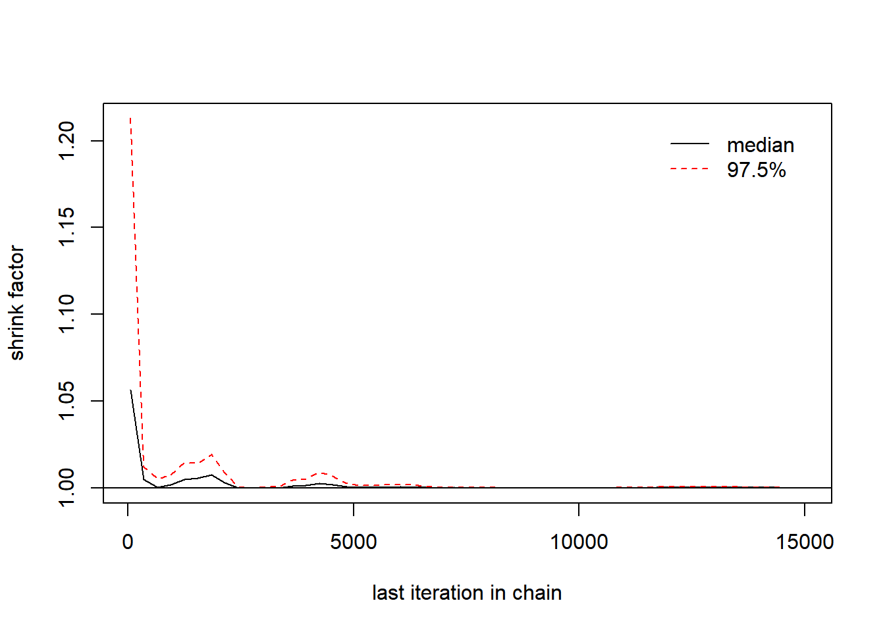
>
> gelman.diag(list(tau[,1],tau[,2],tau[,3]))
## Potential scale reduction factors:
##
## Point est. Upper C.I.
## [1,] 1 1
> gelman.plot(list(tau[,1],tau[,2],tau[,3])) 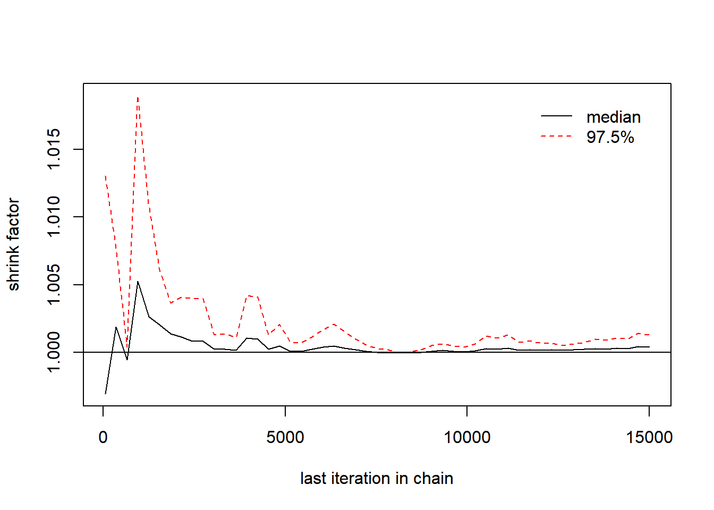
>
> gelman.diag(list(mu[,1],mu[,2],mu[,3]))
## Potential scale reduction factors:
##
## Point est. Upper C.I.
## [1,] 1 1
> gelman.plot(list(mu[,1],mu[,2],mu[,3])) 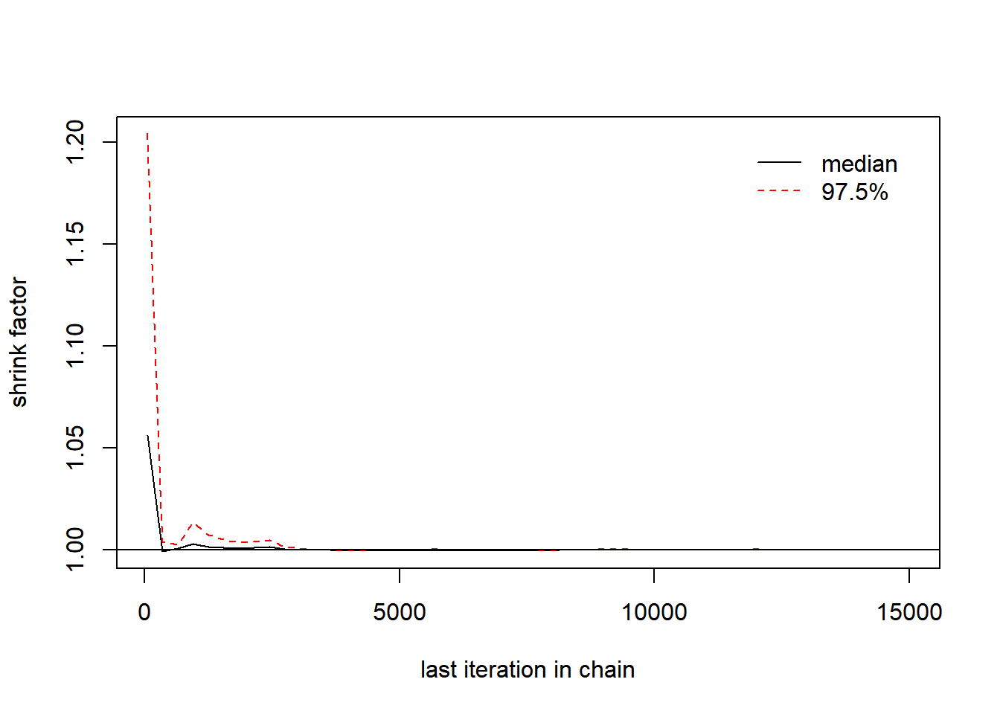
> autocorr.diag(b,0:10)
## [,1] [,2] [,3]
## Lag 0 1.0000000000 1.000000000 1.0000000000
## Lag 1 0.0722527747 0.068435252 0.0827475413
## Lag 2 0.0334138600 0.010478131 0.0242597366
## Lag 3 -0.0093404147 0.012652717 -0.0009752773
## Lag 4 0.0081781642 0.014377170 0.0035632927
## Lag 5 -0.0002235511 0.006424360 -0.0051494777
## Lag 6 -0.0085411773 -0.008835640 -0.0052646922
## Lag 7 0.0047412683 0.005904674 0.0077166661
## Lag 8 0.0133354498 0.001274206 0.0042635489
## Lag 9 -0.0019019347 -0.005775977 -0.0010691770
## Lag 10 0.0095034664 -0.001018360 0.0033272729
> autocorr.plot(b)>
> autocorr.diag(tau,0:10)
## [,1] [,2] [,3]
## Lag 0 1.000000000 1.0000000000 1.0000000000
## Lag 1 0.019725994 0.0226172979 0.0378472380
## Lag 2 0.012788653 0.0196024797 0.0168333753
## Lag 3 0.021158061 -0.0001321189 0.0045626724
## Lag 4 -0.001848407 0.0016633303 -0.0132006877
## Lag 5 0.009428221 0.0051904226 0.0082249292
## Lag 6 -0.005056903 -0.0052096975 0.0133305501
## Lag 7 -0.009174175 0.0017151955 0.0018857403
## Lag 8 0.003468461 0.0096049165 0.0015569461
## Lag 9 0.008782423 -0.0027752369 -0.0001689296
## Lag 10 -0.004248295 -0.0128004107 -0.0079631990
> autocorr.plot(tau)>
> autocorr.diag(mu,0:10)
## [,1] [,2] [,3]
## Lag 0 1.0000000000 1.000000000 1.000000000
## Lag 1 0.0027251911 0.008444651 0.002938956
## Lag 2 0.0062695059 -0.009262845 0.002085919
## Lag 3 0.0073982762 0.004028267 -0.004932280
## Lag 4 0.0146675295 -0.008212265 0.005632789
## Lag 5 -0.0036057179 0.007808938 0.008737079
## Lag 6 -0.0054467202 -0.004168338 -0.005881366
## Lag 7 0.0027729729 0.006552230 0.018023652
## Lag 8 0.0083955960 -0.007118024 -0.013672605
## Lag 9 -0.0126618680 -0.002136951 -0.004971203
## Lag 10 0.0004117873 -0.008889323 0.003446672
> autocorr.plot(mu)> geweke.diag(b)
##
## Fraction in 1st window = 0.1
## Fraction in 2nd window = 0.5
##
## var1 var2 var3
## 0.7724 1.6963 -1.0588
> geweke.diag(tau)
##
## Fraction in 1st window = 0.1
## Fraction in 2nd window = 0.5
##
## var1 var2 var3
## 0.4059 -2.1615 -0.1293
> geweke.diag(mu)
##
## Fraction in 1st window = 0.1
## Fraction in 2nd window = 0.5
##
## var1 var2 var3
## -1.9220 0.7901 -0.8712The later MC convergences. We can considered it as a good estimate of the posterior distribution.
Conclusion
Finally when comparing the DIC of the two models are
> out1$DIC
## [1] 73.24
> out2a$DIC
## [1] 74.47We can conclude that the model 1 ( fixed effects) fits better the data. We conclude also that the mean of the number of deaths is following a Binomial distribution .
> out1
## Inference for Bugs model at "Mod1_cp.txt",
## Current: 3 chains, each with 10000 iterations (first 5000 discarded)
## Cumulative: n.sims = 15000 iterations saved
## mean sd 2.5% 25% 50% 75% 97.5% Rhat n.eff
## p[1] 0.0 0.0 0.0 0.0 0.0 0.0 0.1 1 15000
## p[2] 0.1 0.0 0.1 0.1 0.1 0.1 0.2 1 15000
## p[3] 0.1 0.0 0.0 0.1 0.1 0.1 0.1 1 15000
## p[4] 0.1 0.0 0.0 0.1 0.1 0.1 0.1 1 15000
## p[5] 0.0 0.0 0.0 0.0 0.0 0.1 0.1 1 15000
## p[6] 0.1 0.0 0.0 0.1 0.1 0.1 0.1 1 15000
## p[7] 0.1 0.0 0.0 0.1 0.1 0.1 0.1 1 15000
## p[8] 0.1 0.0 0.1 0.1 0.1 0.2 0.2 1 15000
## p[9] 0.1 0.0 0.0 0.1 0.1 0.1 0.1 1 15000
## p[10] 0.1 0.0 0.0 0.1 0.1 0.1 0.2 1 15000
## p[11] 0.1 0.0 0.1 0.1 0.1 0.1 0.2 1 15000
## p[12] 0.1 0.0 0.0 0.1 0.1 0.1 0.1 1 15000
## deviance 62.8 5.1 54.7 59.1 62.2 65.7 74.8 1 15000
##
## For each parameter, n.eff is a crude measure of effective sample size,
## and Rhat is the potential scale reduction factor (at convergence, Rhat=1).
##
## DIC info (using the rule, pD = Dbar-Dhat)
## pD = 10.5 and DIC = 73.2
## DIC is an estimate of expected predictive error (lower deviance is better).